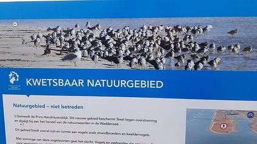
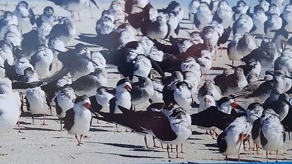

Black skimmer op een bord op Texel
11 januari 2021 · Hoogheemraadschap Hollands Noorderkwartier
- Op de foto
- Black skimmer
- Het ging over
- Inheemse kustvogels


Blijkbaar zit het op Texel vol met Black skimmers, een soort die alleen in Amerika voorkomt. Een mooie foto voor het bord, alleen totaal niet hoe de soortensamenstelling er daadwerkelijk uit ziet.
Het bord is van Hoogheemraadschap Hollands Noorderkwartier, waarvoor dank!
Met dank aan @marnixjonker voor het doorsturen!